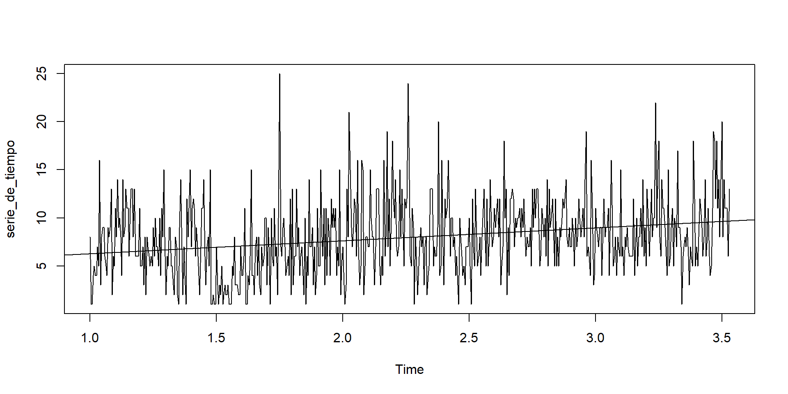
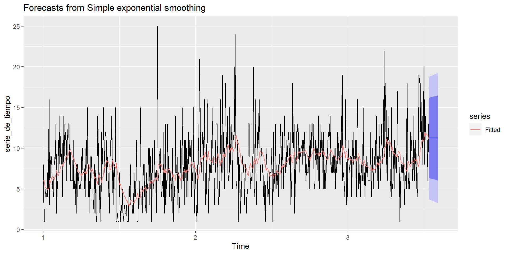
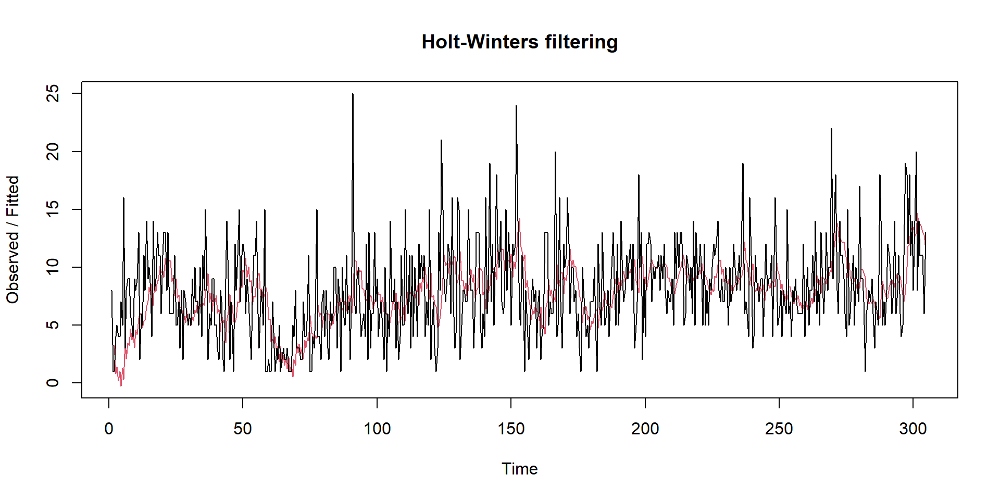

4 Modelado Serie Suavización Exponencial y Métodos
En este capítulo, se abordará el análisis y modelado de una serie de tiempo utilizando dos enfoques ampliamente utilizados: la suavización exponencial y el método de Holt-Winters.
Estos métodos son herramientas valiosas en el campo del análisis de series temporales y permiten capturar y predecir patrones en los datos a lo largo del tiempo.
Examinemos el enfoque de modelado de esta serie temporal mediante una regresión lineal.
plot(serie_de_tiempo)
abline(reg = lm(serie_de_tiempo ~ time(serie_de_tiempo)))
4.1 Método Suavización Exponencial
Aunque de acuerdo al criterio de la prueba prueba de Dickey-Fuller aumentada (ADF), la serie de tiempo es estacionaria y no muestra una tendencia o componente estacional, es posible que el método de Suavización Exponencial Simple no sea útil en este contexto
# Aplicar suavizamiento exponencial simple
modelo_suavizado <- HoltWinters(serie_de_tiempo, beta = FALSE, gamma = FALSE)
modelo_suavizado## Holt-Winters exponential smoothing without trend and without seasonal component.
##
## Call:
## HoltWinters(x = serie_de_tiempo, beta = FALSE, gamma = FALSE)
##
## Smoothing parameters:
## alpha: 0.08937546
## beta : FALSE
## gamma: FALSE
##
## Coefficients:
## [,1]
## a 11.23855Suav_exp <- ses(serie_de_tiempo, h = 15)
autoplot(Suav_exp) + autolayer(fitted(Suav_exp), series="Fitted")
Después de aplicar el método de suavización exponencial a los datos, se llega a la conclusión de que este enfoque no logra capturar de manera efectiva una tendencia estacional presente en los datos, a pesar de tener la capacidad de detectar patrones a lo largo del tiempo, el método de suavización exponencial parece no ser adecuado para identificar y modelar la variabilidad estacional que puede influir en la serie temporal en consideración. La naturaleza de los datos parece no alinearse de manera óptima con las premisas y el enfoque del método de suavización exponencial en relación con la tendencia estacional, por lo tanto, es necesario explorar alternativas más apropiadas y específicas para abordar esta característica particular de la serie de tiempo.
4.2 Metodología Holter-Winter y de suavizamiento
# Instalar y cargar el paquete de suavizamiento exponencial
library(forecast)# Crear una serie de tiempo con frecuencia diaria
serie_tiempof <- ts(datos_sumados$Calificación, frequency = 2)La metodología Holt-Winters es un enfoque de pronóstico de series de tiempo que incorpora componentes de nivel, tendencia y estacionalidad para mejorar la precisión de las predicciones. Los tres componentes que considera son:
- Componente de nivel (nivel): El nivel representa el valor medio de la serie de tiempo en un período dado. Se calcula utilizando el suavizamiento exponencial simple.
- Componente de tendencia (tendencia): La tendencia se refiere a la dirección y magnitud del cambio en la serie de tiempo. Se calcula utilizando el suavizamiento exponencial doble.
- Componente estacional (estacionalidad): La estacionalidad se refiere a las fluctuaciones regulares en la serie de tiempo debido a patrones estacionales. Se incorpora mediante el suavizamiento exponencial triple, que considera tanto la estacionalidad como la tendencia.
La metodología Holt-Winters se adapta bien a series de tiempo que tienen tendencias y patrones estacionales. Esta técnica utiliza los valores históricos para calcular las estimaciones de los tres componentes y luego los combina para realizar pronósticos futuros.
mod1 <- HoltWinters(serie_tiempof, seasonal = "additive")
plot(mod1)
adf.test(diff(serie_tiempof))## Augmented Dickey-Fuller Test
## alternative: stationary
##
## Type 1: no drift no trend
## lag ADF p.value
## [1,] 0 -40.4 0.01
## [2,] 1 -30.0 0.01
## [3,] 2 -23.1 0.01
## [4,] 3 -20.4 0.01
## [5,] 4 -19.9 0.01
## [6,] 5 -18.7 0.01
## Type 2: with drift no trend
## lag ADF p.value
## [1,] 0 -40.4 0.01
## [2,] 1 -29.9 0.01
## [3,] 2 -23.1 0.01
## [4,] 3 -20.3 0.01
## [5,] 4 -19.9 0.01
## [6,] 5 -18.6 0.01
## Type 3: with drift and trend
## lag ADF p.value
## [1,] 0 -40.3 0.01
## [2,] 1 -29.9 0.01
## [3,] 2 -23.1 0.01
## [4,] 3 -20.3 0.01
## [5,] 4 -19.9 0.01
## [6,] 5 -18.6 0.01
## ----
## Note: in fact, p.value = 0.01 means p.value <= 0.01Al aplicar el Método Holt-Winters a nuestros datos de la serie temporal, podemos destacar observar patrones estacionales, a diferencia del enfoque de suavización exponencial, que no logró reflejar las variaciones estacionales, este Método Holt-Winters es efectivo en este sentido. El Método Holt-Winters resulta ser una herramienta útil para abordar tendencias estacionales en series temporales, ofreciendo resultados sólidos y precisos en la modelación de estos patrones.